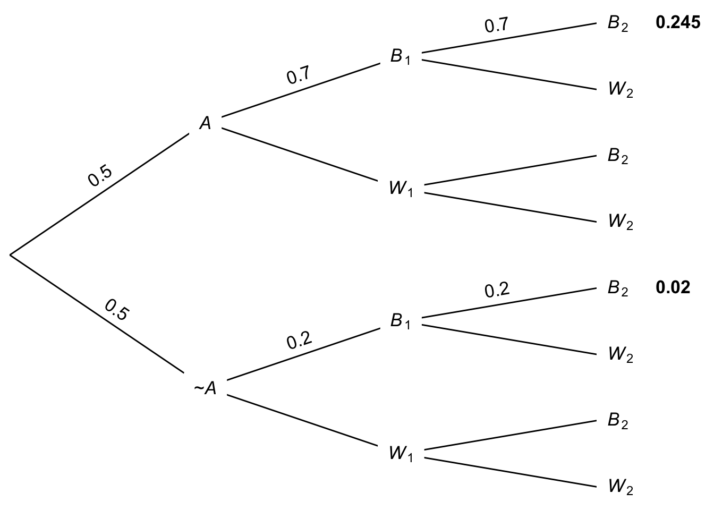
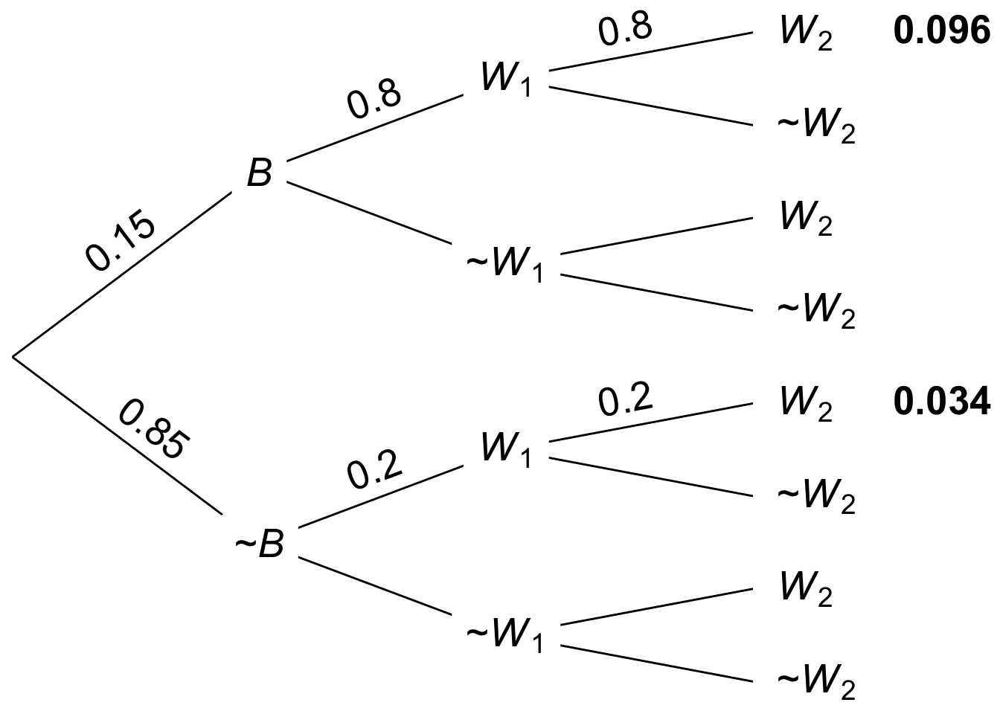
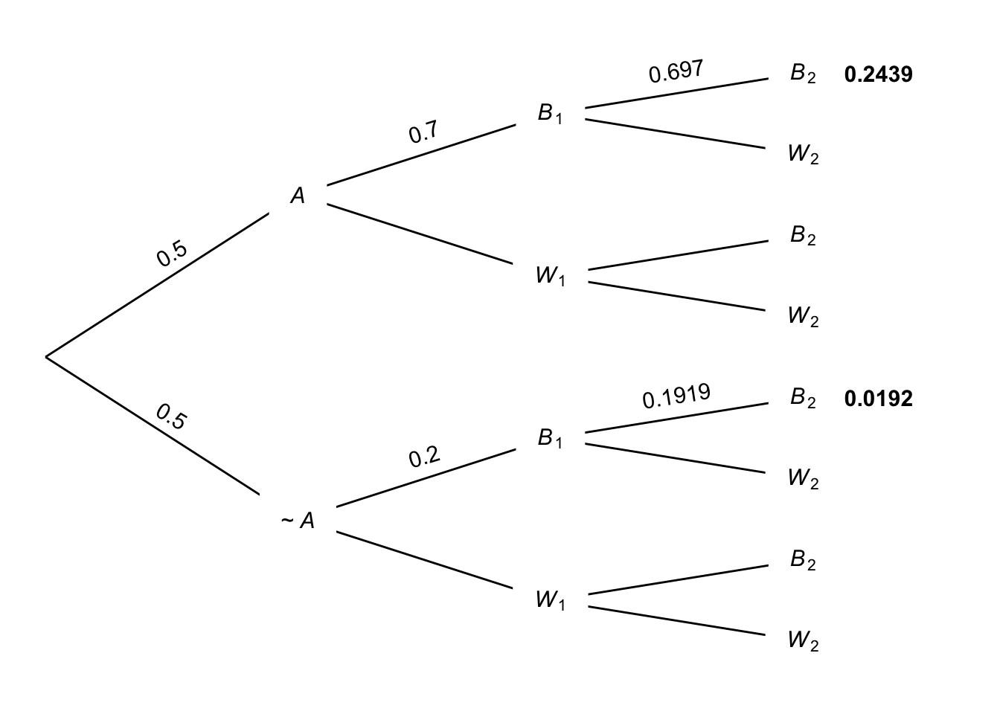

Conditioning is the soul of statistics.
—Joe Blitzstein
We often need to account for multiple pieces of evidence. More than one witness testifies about the colour of a taxicab; more than one person responds to our poll about an upcoming election; etc.
How do we a calculate conditional probability when there are multiple conditions? In other words, how do we handle quantities of the form \(\p(A \given B_1 \wedge B_2 \wedge \ldots)\)?
Imagine you’re faced with another one of our mystery urns. There are two equally likely possibilities: \[ \begin{aligned} A &: \mbox{The urn contains $70$ black marbles, $30$ white marbles.}\\ \neg A &: \mbox{The urn contains $20$ black marbles, $80$ white marbles.}\\ \end{aligned} \] Now suppose you draw a marble at random and it’s black. You put it back, give the urn a good shake, and then draw another: black again. What’s the probability the urn has \(70\) black marbles?
We need to calculate \(\p(A \given B_1 \wedge B_2)\), the probability of \(A\) given that the first and second draws were both black. We already know how to do this calculation for one draw, \(\p(A \given B_1)\). We use Bayes’ theorem to get: \[ \begin{aligned} \p(A \given B_1) &= \frac{\p(B_1 \given A)\p(A)}{\p(B_1 \given A) \p(A) + \p(B_1 \given \neg A) \p(\neg A)} \\ &= \frac{(70/100)(1/2)}{(70/100)(1/2) + (20/100)(1/2)}\\ &= 7/9. \end{aligned} \]
But for two draws, Bayes’ theorem gives us: \[ \begin{aligned} \p(A \given B_1 \wedge B_2) &= \frac{\p(B_1 \wedge B_2 \given A)\p(A)}{\p(B_1 \wedge B_2 \given A) \p(A) + \p(B_1 \wedge B_2 \given \neg A) \p(\neg A)}. \end{aligned} \] To fill in the values on the right hand side, we need to know these quantities:
To get the first quantity, remember that we replaced the first marble before doing the second draw. So, given \(A\), the second draw is independent of the first. There are still \(70\) black marbles out of \(100\) on the second draw, so the chance of black on the second draw is still \(70/100\). In other words: \[ \begin{aligned} \p(B_1 \wedge B_2 \given A) &= \p(B_1 \given A) \p(B_2 \given A)\\ &= (70/100)^2. \end{aligned} \] The same reasoning applies given \(\neg A\), too. Except here the chance of black on each draw is \(20/100\). So: \[ \begin{aligned} \p(B_1 \wedge B_2 \given \neg A) &= \p(B_1 \given \neg A) \p(B_2 \given \neg A)\\ &= (20/100)^2. \end{aligned} \]
Returning to Bayes’ theorem, we can now finish the calculation: \[ \begin{aligned} \p(A \given B_1 \wedge B_2) &= \frac{\p(B_1 \wedge B_2 \given A)\p(A)}{\p(B_1 \wedge B_2 \given A) \p(A) + \p(B_1 \wedge B_2 \given \neg A) \p(\neg A)} \\ &= \frac{(70/100)^2(1/2)}{(70/100)^2(1/2) + (20/100)^2(1/2)}\\ &= 49/53. \end{aligned} \]
The same solution can also be captured in a probability tree. The tree will have an extra stage now, because there’s a second draw. And it will have many more leaves, but luckily we can ignore most of them. We just need to worry about the two leaves where both draws have come up black. And we only need to fill in the probabilities along the paths that lead to those two leaves. The result is Figure 9.1.
Figure 9.1: Tree diagram for two draws with replacement
So \(\p(A \given B_1 \wedge B_2) = 0.245 / (0.245 + 0.02)\), which is the same as \(49/53\), the answer we got with Bayes’ theorem.
You might be able to guess now what would happen after three black draws. Instead of getting squared probabilities in Bayes’ theorem, we’d get cubed probabilities. And using the same logic, we could keep going. We could use Bayes’ theorem to calculate \(\p(A \given B_1 \wedge \ldots \wedge B_n)\) for as many draws \(n\) as you like.
Let’s try a different sort of problem with multiple conditions. Recall the taxicab problem from Chapter 8:
A cab was involved in a hit and run accident at night. Two cab companies, the Green and the Blue, operate in the city. You are given the following data:
We saw it’s only about \(41\%\) likely the cab was really blue, even with the witness’ testimony. But what if there had been two witnesses, both saying the cab was blue?
Let’s use Bayes’ theorem again: \[ \begin{aligned} \p(B \given W_1 \wedge W_2) &= \frac{\p(B)\p(W_1 \wedge W_2 \given B)}{\p(W_1 \wedge W_2)}. \end{aligned} \] We have one of the terms here already: \(\p(B) = 15/100\). What about the other two:
Let’s make things easy on ourselves by assuming our two witnesses are reporting independently. They don’t talk to each other, or influence one another in any way. They’re only reporting what they saw (or think they saw). Then we can “factor” these probabilities like we did when sampling with replacement: \[ \begin{aligned} \p(W_1 \wedge W_2 \given B) &= \p(W_1 \given B) \p(W_2 \given B)\\ &= (80/100)^2. \end{aligned} \] And for the denominator we use the Law of Total Probability: \[ \begin{aligned} \p(W_1 \wedge W_2) &= \p(W_1 \wedge W_2 \given B)\p(B) + \p(W_1 \wedge W_2 \given \neg B)\p(\neg B)\\ &= (80/100)^2(15/100) + (20/100)^2(85/100)\\ &= 96/1000 + 34/1000\\ &= 13/100. \end{aligned} \]
Now we can return to Bayes’ theorem to finish the problem: \[ \begin{aligned} \p(B \given W_1 \wedge W_2) &= \frac{(15/100)(80/100)^2}{13/100}\\ &= 96/130\\ &\approx .74. \end{aligned} \] So, with two witnesses independently agreeing that the cab was blue, the probability goes up from less than \(1/2\) to almost \(3/4\).
 Figure 9.2: Tree diagram for the two-witness taxicab problem
We can use a tree here too, similar to the one we made when sampling two black marbles with replacement. As before, we only need to worry about the \(W_1 \wedge W_2\) leaves, the ones where both witnesses say the cab was blue. The result is Figure 9.2, which tells us that \(\p(B \given W_1 \wedge W_2) = 0.096 / (0.096 + 0.034)\), which is approximately \(0.74\).
The problems we’ve done so far were simplified by assuming independence. We sampled with replacement in the urn problem, and we assumed our two witnesses were independently reporting what they saw in the taxicab problem. What about when independence doesn’t hold?
Let’s go back to our urn problem, but this time suppose we don’t replace the marble after the first draw. How do we calculate \(\p(A \given B_1 \wedge B_2)\) then?
We’re still going to start with Bayes’ theorem: \[ \begin{aligned} \p(A \given B_1 \wedge B_2) &= \frac{\p(B_1 \wedge B_2 \given A)\p(A)}{\p(B_1 \wedge B_2 \given A) \p(A) + \p(B_1 \wedge B_2 \given \neg A) \p(\neg A)}. \end{aligned} \] But to calculate terms like \(\p(B_1 \wedge B_2 \given A)\) now, we need to think things through in two steps.
We know the first draw has a \(70/100\) chance of coming up black if \(A\) is true: \[ \p(B_1 \given A) = 70/100. \] And once the first draw has come up black, if \(A\) is true then there are 69 black balls remaining and 30 white. So: \[ \p(B_2 \given B_1 \wedge A) = 69/99. \] So instead of multiplying \(70/100\) by itself, we’re multiplying \(70/100\) by almost \(70/100\): \[ \begin{aligned} \p(B_1 \wedge B_2 \given A) &= (70/100)(69/99)\\ &= 161/330. \end{aligned} \]
Using similar reasoning for the possibility that \(\neg A\) instead, we can calculate \[ \begin{aligned} \p(B_1 \wedge B_2 \given \neg A) &= (20/100)(19/99)\\ &= 19/495. \end{aligned} \]
Returning to Bayes’ theorem to finish the calculation: \[ \begin{aligned} \p(A \given B_1 \wedge B_2) &= \frac{\p(B_1 \wedge B_2 \given A)\p(A)}{\p(B_1 \wedge B_2 \given A) \p(A) + \p(B_1 \wedge B_2 \given \neg A) \p(\neg A)} \\ &= \frac{(161/330)(1/2)}{(161/330)(1/2) + (19/495)(1/2)} \\ &= 483/521 \\ &\approx .93. \end{aligned} \] Notice how similar this answer is to the \(.92\) we got when sampling with replacement. With so many black and white marbles in the urn, taking one out doesn’t make much difference. The second draw is almost the same as the first, so the final answer isn’t much affected.
 Figure 9.3: Tree diagram for two draws without replacement, values rounded
The tree diagram for this problem will also be similar to the with-replacement version. The key difference is the probabilities at the last stage of the tree. Without independence, the probability of a \(B_2\) branch is affected by the \(B_1\) that precedes it. The result is Figure 9.3, though note that some values are rounded. Still we find that: \[ \begin{aligned} \p(A \given B_1 \wedge B_2) &\approx \frac{ 0.2439 }{ 0.2439 + 0.0192 } \\ &\approx 0.93. \end{aligned} \]
The calculation we just did relied on a new rule, which we should make explicit. Start by recalling a familiar rule:
\(\p(A \wedge B) = \p(A \given B) \p(B).\)
Our new rule applies the same idea to situations where some proposition \(C\) is taken as a given.
\(\p(A \wedge B \given C) = \p(A \given B \wedge C) \p(B \given C).\)
In a way, the new rule isn’t really new. We just have to realize that the probabilities we get when we take a condition \(C\) as given are still probabilities. They obey all the same rules as unconditional probabilities, and this includes the General Multiplication Rule.
Another example which illustrates this point is the Negation Rule. The following conditional version is also valid:
\(\p(\neg A \given C) = 1 - \p(A \given C).\)
We could go through all the rules of probability we’ve learned and write out the conditional version for each one. But we’ve already got enough rules and equations to keep track of. So let’s just remember this mantra instead:
Conditional probabilities are probabilities.
So if we have a rule of probability, the same rule will hold if we add a condition \(C\) into each of the \(\p(\ldots)\) terms.
We’ve learned two strategies for calculating conditional probabilities with multiple conditions.
The first strategy is easier, but it only works when the conditions are appropriately independent. Like when we sample with replacement, or when two witnesses independently report what they saw.
In this kind of case, we first use Bayes’ theorem, and then “factor” the terms: \[ \begin{aligned} \p(A \given B_1 \wedge B_2) &= \frac{\p(B_1 \wedge B_2 \given A)\p(A)}{% \p(B_1 \wedge B_2 \given A)\p(A) +% \p(B_1 \wedge B_2 \given \neg A)\p(\neg A)}\\ &= \frac{\p(B_1 \given A)\p(B_2 \given A)\p(A)}{% \p(B_1 \given A)\p(B_2 \given A)\p(A) +% \p(B_1 \given \neg A)\p(B_2 \given \neg A)\p(\neg A)}\\ &= \frac{(\p(B_1 \given A))^2\p(A)}{% (\p(B_1 \given A))^2\p(A) +% (\p(B_1 \given \neg A))^2\p(\neg A)}. \end{aligned} \]
Our second strategy is a little more difficult. But it works even when the conditions are not independent. We still start with Bayes’ theorem. But then we apply the conditional form of the General Multiplication Rule: \[ \begin{aligned} \p(A \given B_1 \wedge B_2) &= \frac{\p(B_1 \wedge B_2 \given A)\p(A)}{% \p(B_1 \wedge B_2 \given A)\p(A) +% \p(B_1 \wedge B_2 \given \neg A)\p(\neg A)}\\ &= \frac{\p(B_2 \given B_1 \wedge A)\p(B_1 \given A)\p(A)}{% \p(B_2 \given B_1 \wedge A)\p(B_1 \given A)\p(A) +% \p(B_2 \given B_1 \wedge \neg A)\p(B_1 \given \neg A)\p(\neg A)}. \end{aligned} \]
These are some pretty hairy formulas, so memorizing them probably isn’t a good idea. It’s better to understand how they flow from Bayes’ theorem or a tree diagram.
Recall the following problem from Chapter 8.
Willy Wonka Co. makes two kinds of boxes of chocolates. The “wonk box” has four caramel chocolates and six regular chocolates. The “zonk box” has six caramel chocolates, two regular chocolates, and two mint chocolates. A third of their boxes are wonk boxes, the rest are zonk boxes.
They don’t mark the boxes. The only way to tell what kind of box you’ve bought is by trying the chocolates inside. In fact, all the chocolates look the same; you can only tell the difference by tasting them.
Previously you calculated the probability a randomly chosen box is a wonk box given that a chocolate randomly selected from it is caramel. This time, suppose you randomly select two chocolates.
Recall the following problem from Chapter 8.
A magic shop sells two kinds of trick coins. The first kind are biased towards heads: they come up heads \(9\) times out of \(10\) (the tosses are independent). The second kind are biased towards tails: they comes up tails \(8\) times out of \(10\) (tosses still independent). Half the coins are the first kind, half are the second kind. But they don’t label the coins, so you have to experiment to find out which are which.
Previously, you picked a coin at random and flipped it once. But now suppose you flip it a second time. What’s the probability it’s the first kind of coin if it lands heads both times?
Recall the following problem from Chapter 8.
There is a room filled with two types of urns.
The two types of urn look identical, but \(80\%\) of them are Type A.
Previously you calculated the probability a randomly selected urn is Type B given that one marble randomly drawn from it is yellow. Suppose now you put the yellow marble back, shake hard, and draw another marble at random from the same urn.
Recall the following problem from Chapter 8.
A room contains four urns. Three of them are Type X, one is Type Y.
You are going to pick an urn at random and start drawing marbles from it at random without replacement.
Previously you calculated the probability the urn is Type X given that the first draw is black.
The order in which conditions are given doesn’t matter. More precisely, the following equation always holds:
\[ \p(A \given B \wedge C) = \p(A \given C \wedge B).\]
Use the rules of probability to prove that it always holds.
The order in which things happen often matters. If the light was red but is now green, the intersection is probably safe to drive through. But if the light was green and is now red, it’s probably not safe.
We just saw, though, that the order in which conditions are given doesn’t make any difference to the probability.
Explain why these two observations do not conflict.
Above we observed that \(\p(\neg A \given C) = 1 - \p(A \given C)\). Prove that this equation holds. Hint: start with the definition of conditional probability, and then recall that \(1 = \p(C) / \p(C)\).